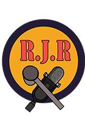

R.J.R
AFLEVERINGEN
Check hier onze laatste afleveringen
-

S1E6: Dik is niet sick!
Ozempic om af te vallen? Dat dachten wij niet. Er zijn veel meer manieren om op een gezonde manier aft te vallen en wij zoeken het voor je uit!
-
S1E5: Implantaten voor je spieren?!
Wil je weten hoe je elke training maximaal kunt benutten voor goede spiergroei? Of wat je moet eten om het gewenste resultaat te krijgen? Wij onderzoeken de meest effectieve spieropbouwtechnieken voor jou!
-
S1E4: Dood door vitamines?
Ontdek de waarheid achter vitamines. Wat werkt echt en wat is pure marketing? Welke vitamines heb je echt nodig en kan je ook te veel hebben van sommige vitamines? Wij zoeken dat voor je uit!
-
S1E3: Anabolen in je bil?!
Net zo eindigen als Yuri van Gelder? Doping is een sport enhancing drug en uiterst verboden in de sportwereld. Toch is er veel onduidelijkheid over wat wel en niet mag. Wij gaan dat met jullie bespreken.
-
S1E2: Slapend sterk worden
Rust is uiterst belangrijk na het sporten, maar wat is genoeg rust en wat is te veel rust? Wij vertellen jullie er alles over!
-
S1E1: Power uit Proteïne!
Eiwitten innemen? Ja! En veel ook.... Dat is wat veel mensen zeggen, maar wat is daar van waar? Wij duiken de wereld van eiwitten in en zoeken het voor je uit! Ga je mee?